Case study
Heard of KunstAtelier? Me neither.
Designing a fictional museum app that makes discovering exhibitions and booking tickets accessible to people with different levels of technical confidence and language proficiency.
Note: End-to-end UX design project completed as part of the Google UX Design Certificate.
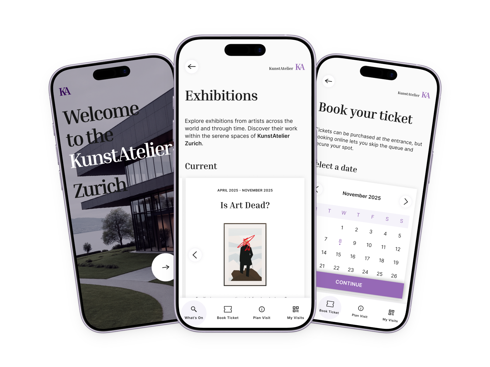
Problem
Visiting a museum should feel inspiring, not overwhelming.
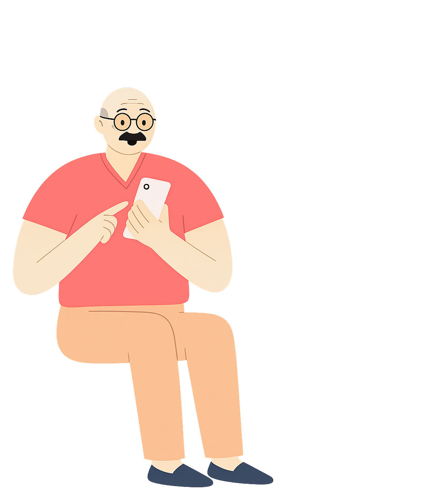
Confusing UX and feature overload
Users struggle to access the content they actually want.
Lack of personalized, digestible content
Visitors feel overwhelmed or miss exhibits that match their interests.
Limited accessibility and inclusivity
Some visitors struggle to use the app due to language, visual, hearing, or mobility barriers.
Role
End-to-end ownership of the UX design process, from understanding user needs to designing, testing and refining the final prototype.
Constraints
Designing for users whose needs and motivations were very different from my own. As my first complete UX project, I also had to apply newly learned methods and tools while building the solution from scratch.
01
Understanding
Stepping into the shoes of museum lovers.
Because museums were not naturally part of my world, I had to consciously build empathy for the people I was designing for. Through competitive research and persona development, I explored different motivations, expectations and levels of technical confidence. Two personas ultimately guided the design process and helped me understand how differently people experience museums.
Challenge
Design for people with different levels of technical confidence and cultural expectations.
Solution
Use personas and journey maps to uncover pain points and prioritize inclusiveness, accessibility and simplicity.
Competitive audit
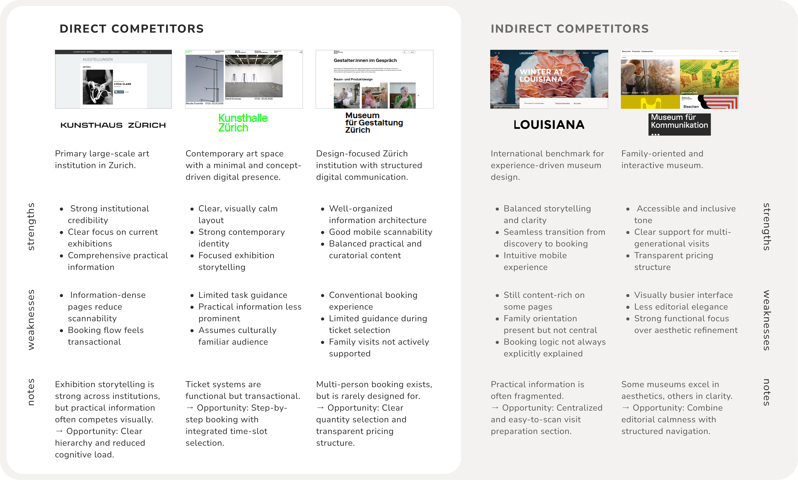
Personas
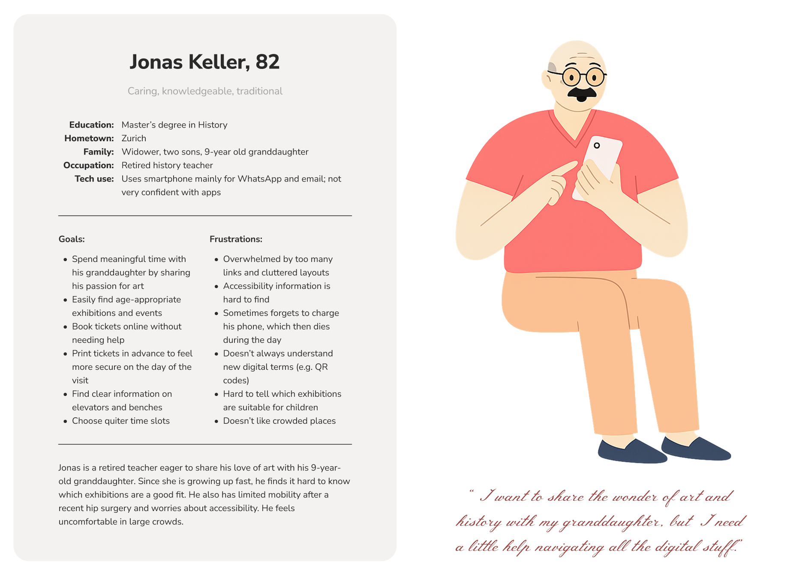
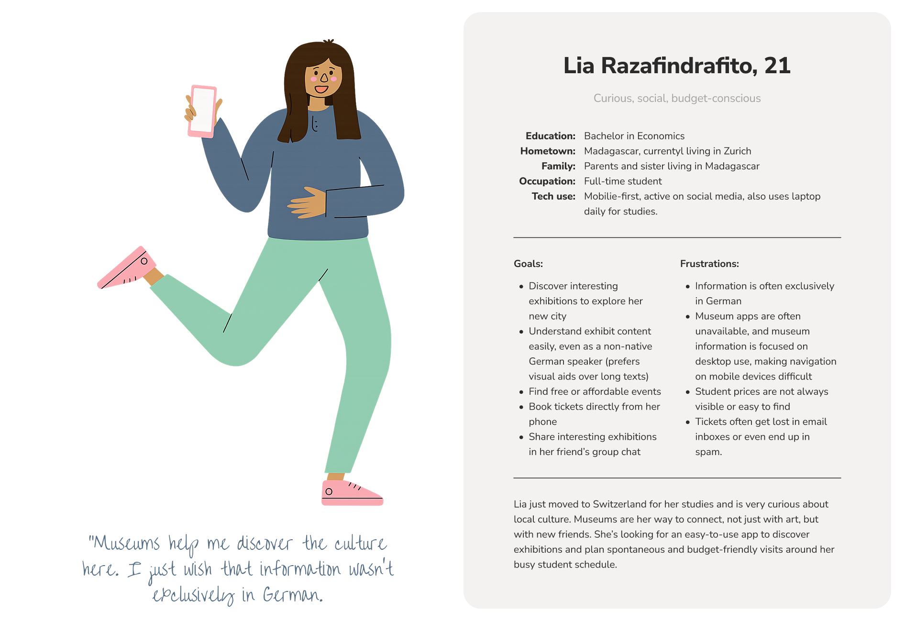
User journey maps
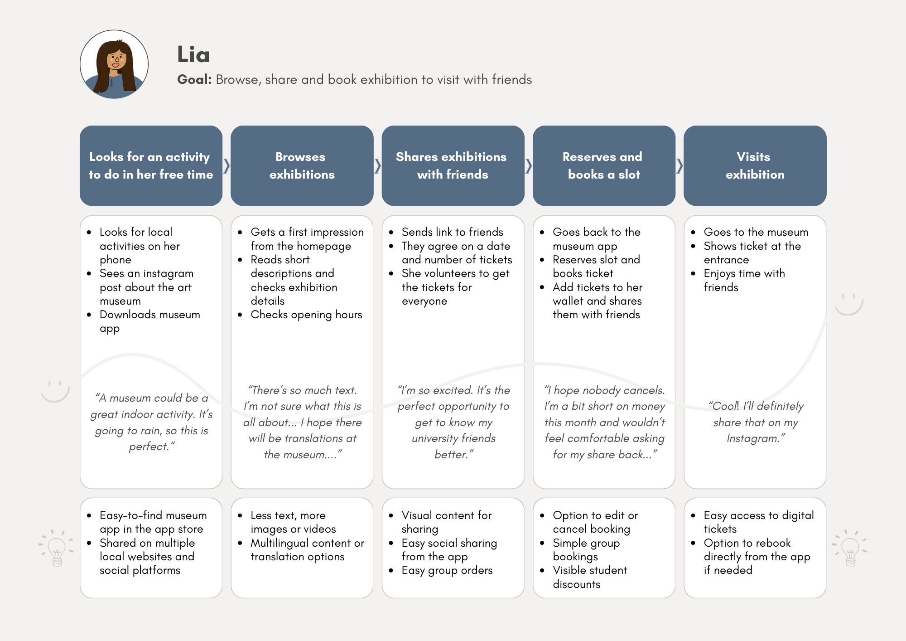
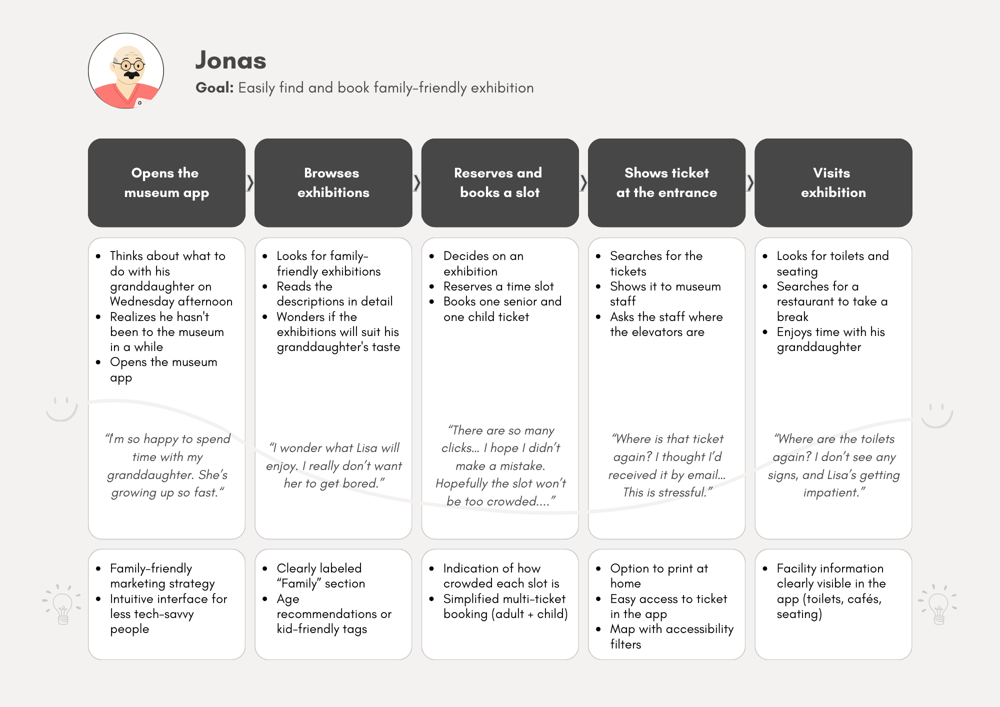
Storyboard
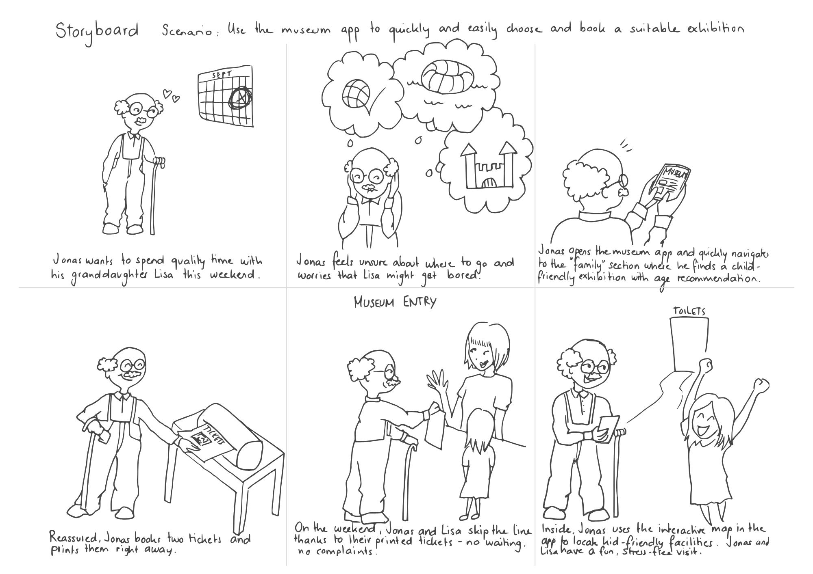
02
Exploring
Designing the experience
Thanks to my background in process modelling and business analysis, the user flow came quite naturally. I designed the app around a simple journey: Explore → Book → Plan → Visit. This structure mirrors how people naturally prepare for a museum visit. Paper sketches then helped me move beyond the obvious solutions and rapidly explore different layouts and features.
Challenge
How do you make an information-heavy experience feel simple and intuitive?
Solution
Reduce cognitive load by simplifying navigation and surfacing important information earlier in the journey.
User flow
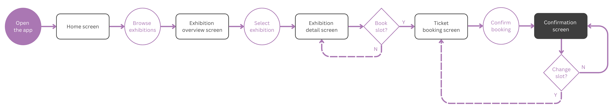
Wireframes
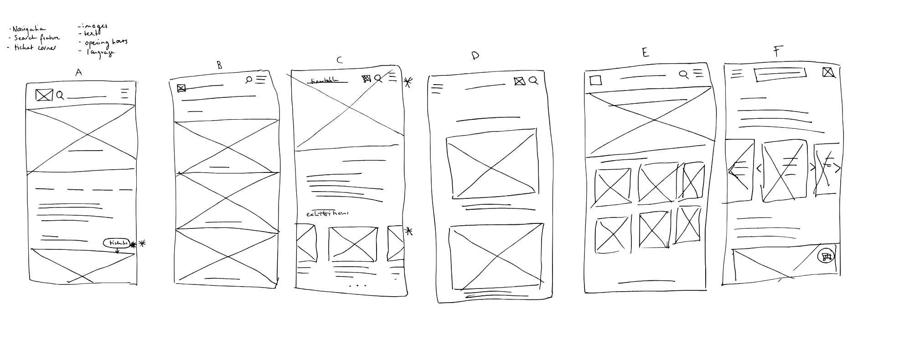
Low-fidelity prototype
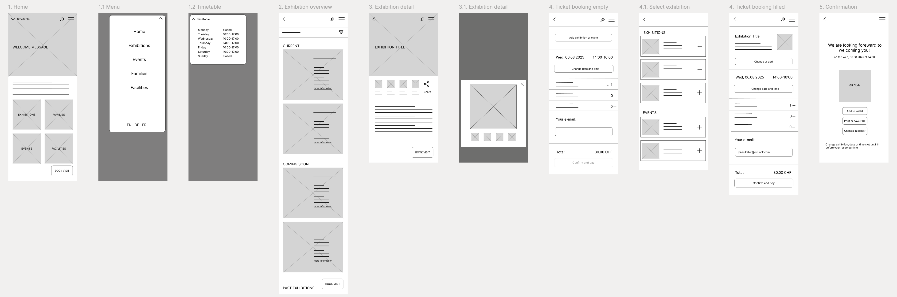
03
Testing
The value of watching users struggle.
I conducted a moderated usability study with five participants representing different ages, technical confidence levels and language backgrounds. Participants were asked to book a ticket, share an exhibition and find opening hours. The sessions quickly revealed an important lesson: what felt intuitive to me was not always intuitive for others.
Challenge
Designing for inclusiveness meant balancing the needs of users with different expectations, languages and levels of technical confidence.
Solution
Test with a diverse group of participants, identify recurring patterns and prioritize changes that improve the experience for the widest range of users.
Key Findings
Opening hours were difficult to find.
The booking
flow created uncertainty.
Sharing exhibitions felt
intuitive.
Design Changes
Opening hours became more prominent.
The booking
flow was reorganized.
An additional checkout step
was introduced to reduce overwhelm.
Iterating the Lo-Fi
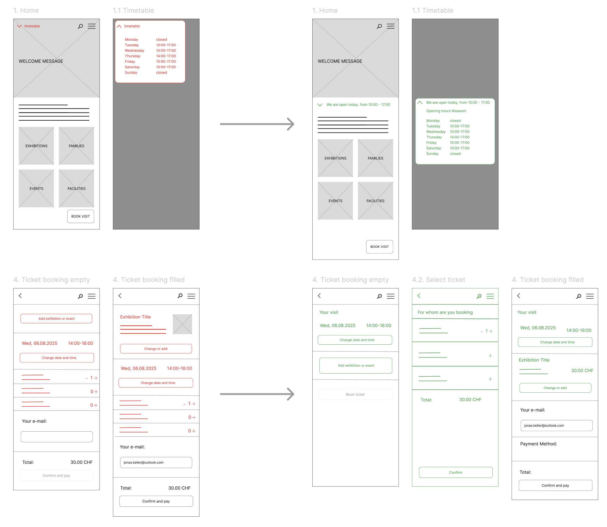
04
Refining
Designing a calm and approachable experience.
After validating and iterating on the core flows, I focused on the visual identity of the app. The goal was to create an experience that felt cultural and refined while remaining approachable and easy to navigate. I developed the high-fidelity prototype and design library simultaneously to ensure consistency across the entire experience.
Challenge
How do you create an experience that feels cultural and refined without becoming intimidating or difficult to use?
Solution
Use a restrained visual language, clear hierarchy and accessible design patterns to create an experience that feels both elegant and approachable.
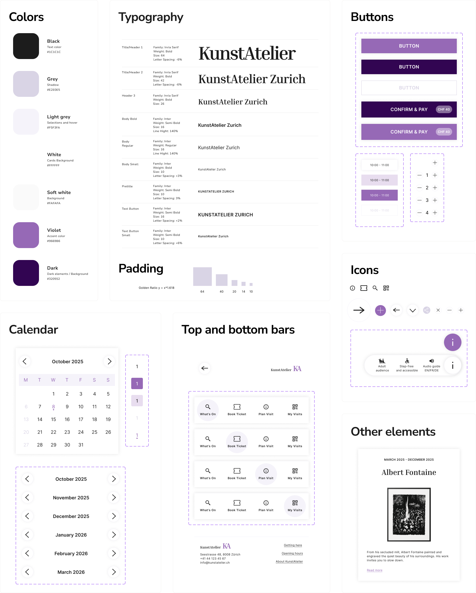
Creativity and sophistication
A restrained and neutral color palette keeps the focus on exhibitions and artworks instead of the interface itself. Violet is used intentionally as an accent color to guide attention and add a sense of creativity and sophistication.
A refined cultural aesthetic
The combination of Inria Serif and Inter balances a refined cultural aesthetic with strong readability across different age groups and levels of technical confidence. A consistent spacing system based on the golden ratio creates visual rhythm and harmony throughout the interface.
Design for confidence
Clear visual hierarchy distinguishes primary, secondary and disabled actions, helping users immediately understand what they can do. Important contextual information, such as ticket prices, is integrated directly into buttons to support confident decision-making.
Communicate at a glance
Icons support orientation without dominating the interface. They also communicate key exhibition characteristics at a glance, such as accessibility, family-friendliness and available translations. This helps visitors quickly understand whether an exhibition is right for them before reading more detailed information.
Inspired by gallery spaces
Square cards and framed components echo the proportions of picture frames, subtly extending the visual language of the museum into the interface. This creates a cohesive experience between the digital and physical worlds.
A familiar way to book
A full-month calendar view provides a familiar overview, allowing visitors to quickly choose a suitable date for both spontaneous and future visits.
Following the visitor's journey
The bottom navigation is organized around the natural museum journey: discover exhibitions, book tickets, plan the visit and access your bookings. This creates an intuitive flow that matches users' mental model.
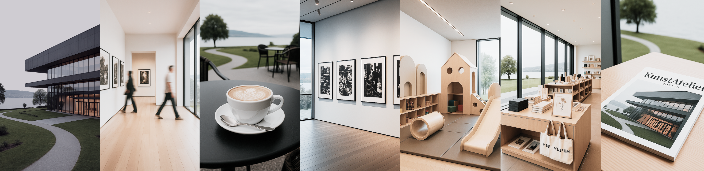
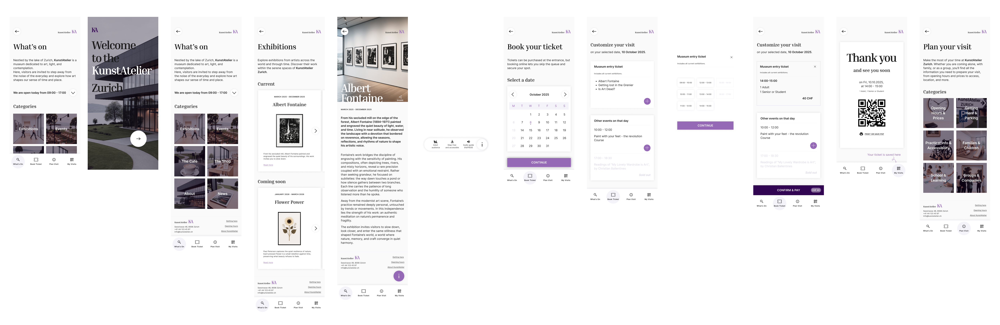
Final Prototype
A museum experience without friction.
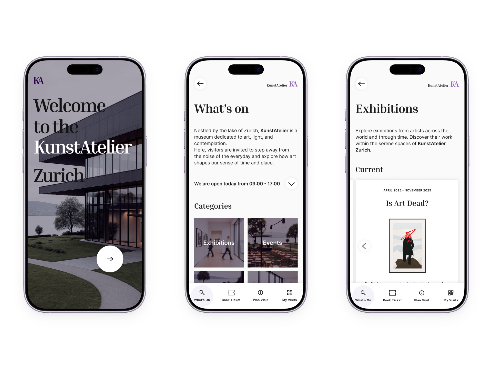
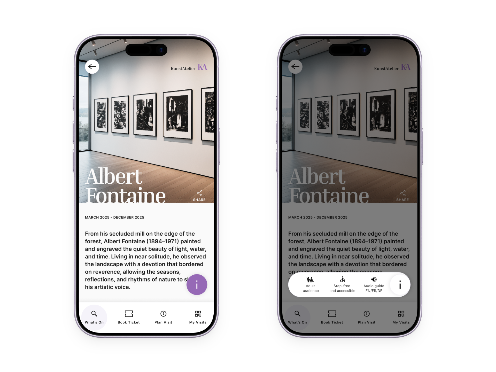
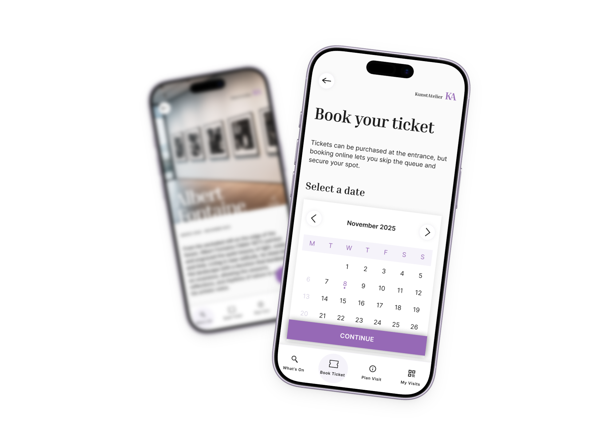
Reflection
Growth begins outside your comfort zone.
This project challenged me to design for people whose interests, motivations and experiences were very different from my own. Along the way, I not only learned more about UX design best practices, but also discovered that stepping outside your comfort zone can lead to unexpected curiosity and growth.